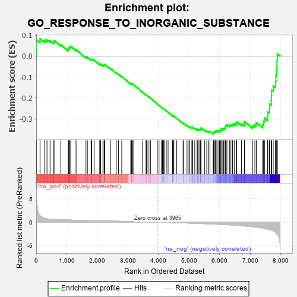
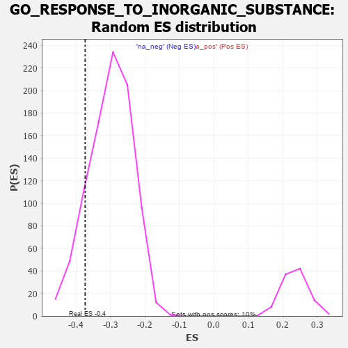

| | | Dataset | 7d |
| Phenotype | NoPhenotypeAvailable |
| Upregulated in class | na_neg |
| GeneSet | GO_RESPONSE_TO_INORGANIC_SUBSTANCE |
| Enrichment Score (ES) | -0.37337512 |
| Normalized Enrichment Score (NES) | -1.2436098 |
| Nominal p-value | 0.13154961 |
| FDR q-value | 0.5531747 |
| FWER p-Value | 1.0 |
Table: GSEA Results Summary

Fig 1: Enrichment plot: GO_RESPONSE_TO_INORGANIC_SUBSTANCE
Profile of the Running ES Score & Positions of GeneSet Members on the Rank Ordered List
| PROBE | GENE SYMBOL | GENE_TITLE | RANK IN GENE LIST | RANK METRIC SCORE | RUNNING ES | CORE ENRICHMENT | | 1 | SYT2 | | | 8 | 5.577 | 0.0779 | No |
| 2 | ADCY8 | | | 124 | 1.418 | 0.0833 | No |
| 3 | HGF | | | 276 | 0.870 | 0.0764 | No |
| 4 | GSK3A | | | 351 | 0.745 | 0.0775 | No |
| 5 | ERCC1 | | | 453 | 0.660 | 0.0739 | No |
| 6 | APEX1 | | | 577 | 0.604 | 0.0668 | No |
| 7 | CCNB1 | | | 581 | 0.601 | 0.0749 | No |
| 8 | BLM | | | 804 | 0.531 | 0.0542 | No |
| 9 | AKT1 | | | 1040 | 0.476 | 0.0310 | No |
| 10 | MEF2C | | | 1054 | 0.473 | 0.0360 | No |
| 11 | AIFM1 | | | 1072 | 0.469 | 0.0405 | No |
| 12 | RAD51 | | | 1090 | 0.466 | 0.0449 | No |
| 13 | SRC | | | 1128 | 0.459 | 0.0467 | No |
| 14 | CCS | | | 1302 | 0.427 | 0.0307 | No |
| 15 | CDK4 | | | 1626 | 0.370 | -0.0052 | No |
| 16 | BACE1 | | | 1673 | 0.360 | -0.0060 | No |
| 17 | ALG2 | | | 1794 | 0.339 | -0.0165 | No |
| 18 | FMR1 | | | 1816 | 0.334 | -0.0144 | No |
| 19 | GLRA2 | | | 1892 | 0.321 | -0.0194 | No |
| 20 | KCNC2 | | | 2075 | 0.295 | -0.0384 | No |
| 21 | BMP7 | | | 2107 | 0.290 | -0.0383 | No |
| 22 | CUTA | | | 2181 | 0.279 | -0.0436 | No |
| 23 | TRAP1 | | | 2219 | 0.274 | -0.0445 | No |
| 24 | CDK2 | | | 2226 | 0.272 | -0.0414 | No |
| 25 | CREB1 | | | 2243 | 0.269 | -0.0396 | No |
| 26 | MET | | | 2430 | 0.240 | -0.0599 | No |
| 27 | RTF2 | | | 2615 | 0.210 | -0.0804 | No |
| 28 | DDI2 | | | 2691 | 0.200 | -0.0871 | No |
| 29 | AQP3 | | | 2796 | 0.184 | -0.0977 | No |
| 30 | TIGAR | | | 3091 | 0.138 | -0.1332 | No |
| 31 | GPX1 | | | 3109 | 0.135 | -0.1335 | No |
| 32 | SYT8 | | | 3115 | 0.135 | -0.1322 | No |
| 33 | OGG1 | | | 3135 | 0.132 | -0.1327 | No |
| 34 | GCH1 | | | 3166 | 0.127 | -0.1348 | No |
| 35 | LDHA | | | 3479 | 0.080 | -0.1734 | No |
| 36 | MAPK3 | | | 3589 | 0.062 | -0.1864 | No |
| 37 | STK25 | | | 3602 | 0.059 | -0.1871 | No |
| 38 | FIS1 | | | 3654 | 0.051 | -0.1928 | No |
| 39 | HSF1 | | | 3718 | 0.039 | -0.2003 | No |
| 40 | DAXX | | | 3722 | 0.038 | -0.2001 | No |
| 41 | SYT11 | | | 3732 | 0.036 | -0.2008 | No |
| 42 | GLRA1 | | | 3957 | 0.001 | -0.2293 | No |
| 43 | PARP1 | | | 4014 | -0.010 | -0.2363 | No |
| 44 | PDE8A | | | 4097 | -0.023 | -0.2464 | No |
| 45 | ABL1 | | | 4125 | -0.027 | -0.2495 | No |
| 46 | CRK | | | 4139 | -0.031 | -0.2507 | No |
| 47 | NFYA | | | 4140 | -0.031 | -0.2502 | No |
| 48 | SYT12 | | | 4172 | -0.037 | -0.2536 | No |
| 49 | PDX1 | | | 4179 | -0.038 | -0.2539 | No |
| 50 | LRP11 | | | 4250 | -0.050 | -0.2621 | No |
| 51 | SYT17 | | | 4310 | -0.061 | -0.2687 | No |
| 52 | NDRG1 | | | 4456 | -0.085 | -0.2860 | No |
| 53 | ERCC6 | | | 4464 | -0.087 | -0.2856 | No |
| 54 | LRRK2 | | | 4467 | -0.087 | -0.2847 | No |
| 55 | MEF2A | | | 4499 | -0.095 | -0.2873 | No |
| 56 | SYT4 | | | 4590 | -0.116 | -0.2971 | No |
| 57 | TERT | | | 4801 | -0.157 | -0.3216 | No |
| 58 | P2RX4 | | | 4813 | -0.161 | -0.3207 | No |
| 59 | ATRX | | | 4929 | -0.184 | -0.3328 | No |
| 60 | AOC1 | | | 4993 | -0.197 | -0.3380 | No |
| 61 | KLF4 | | | 5005 | -0.198 | -0.3366 | No |
| 62 | DRD2 | | | 5088 | -0.221 | -0.3439 | No |
| 63 | DDX11 | | | 5102 | -0.225 | -0.3424 | No |
| 64 | MMP9 | | | 5108 | -0.227 | -0.3398 | No |
| 65 | HDAC6 | | | 5183 | -0.244 | -0.3458 | No |
| 66 | PTEN | | | 5262 | -0.261 | -0.3520 | No |
| 67 | CDK1 | | | 5264 | -0.262 | -0.3484 | No |
| 68 | CD9 | | | 5319 | -0.277 | -0.3514 | No |
| 69 | ITPR3 | | | 5361 | -0.288 | -0.3525 | No |
| 70 | CPNE9 | | | 5374 | -0.289 | -0.3500 | No |
| 71 | DLG4 | | | 5388 | -0.293 | -0.3475 | No |
| 72 | PRDX3 | | | 5389 | -0.293 | -0.3433 | No |
| 73 | FABP4 | | | 5509 | -0.322 | -0.3539 | No |
| 74 | SPHK1 | | | 5576 | -0.339 | -0.3576 | No |
| 75 | G6PD | | | 5638 | -0.358 | -0.3603 | No |
| 76 | CASP8 | | | 5678 | -0.369 | -0.3600 | No |
| 77 | TRPC6 | | | 5784 | -0.401 | -0.3677 | Yes |
| 78 | ADA | | | 5798 | -0.405 | -0.3636 | Yes |
| 79 | ANXA7 | | | 5827 | -0.413 | -0.3614 | Yes |
| 80 | ATG7 | | | 5858 | -0.420 | -0.3592 | Yes |
| 81 | SZT2 | | | 5882 | -0.429 | -0.3561 | Yes |
| 82 | PCGF2 | | | 5943 | -0.451 | -0.3573 | Yes |
| 83 | SYT9 | | | 5992 | -0.469 | -0.3568 | Yes |
| 84 | HVCN1 | | | 6034 | -0.482 | -0.3552 | Yes |
| 85 | TRPC3 | | | 6035 | -0.483 | -0.3484 | Yes |
| 86 | CALR | | | 6077 | -0.499 | -0.3466 | Yes |
| 87 | DLG2 | | | 6126 | -0.513 | -0.3454 | Yes |
| 88 | STIM1 | | | 6169 | -0.528 | -0.3433 | Yes |
| 89 | KLF2 | | | 6182 | -0.532 | -0.3373 | Yes |
| 90 | ATP7B | | | 6194 | -0.535 | -0.3311 | Yes |
| 91 | RGN | | | 6233 | -0.547 | -0.3282 | Yes |
| 92 | MIEN1 | | | 6316 | -0.582 | -0.3305 | Yes |
| 93 | NPC1 | | | 6364 | -0.602 | -0.3279 | Yes |
| 94 | CPNE2 | | | 6417 | -0.627 | -0.3257 | Yes |
| 95 | SYT15 | | | 6472 | -0.650 | -0.3234 | Yes |
| 96 | CPNE8 | | | 6538 | -0.680 | -0.3220 | Yes |
| 97 | STK24 | | | 6550 | -0.684 | -0.3137 | Yes |
| 98 | EGFR | | | 6708 | -0.765 | -0.3229 | Yes |
| 99 | NET1 | | | 6803 | -0.816 | -0.3234 | Yes |
| 100 | ADAM9 | | | 6808 | -0.819 | -0.3123 | Yes |
| 101 | CPNE5 | | | 7070 | -0.977 | -0.3317 | Yes |
| 102 | SYT1 | | | 7148 | -1.033 | -0.3269 | Yes |
| 103 | TSPO | | | 7194 | -1.065 | -0.3176 | Yes |
| 104 | LOXL2 | | | 7403 | -1.269 | -0.3261 | Yes |
| 105 | OTC | | | 7430 | -1.305 | -0.3110 | Yes |
| 106 | CNGA3 | | | 7463 | -1.353 | -0.2959 | Yes |
| 107 | CALM1 | | | 7567 | -1.499 | -0.2878 | Yes |
| 108 | TRPV6 | | | 7569 | -1.502 | -0.2667 | Yes |
| 109 | TRPA1 | | | 7625 | -1.608 | -0.2509 | Yes |
| 110 | PDCD6 | | | 7630 | -1.615 | -0.2286 | Yes |
| 111 | TRPM2 | | | 7680 | -1.712 | -0.2106 | Yes |
| 112 | ANK3 | | | 7690 | -1.740 | -0.1872 | Yes |
| 113 | ADCY1 | | | 7695 | -1.752 | -0.1629 | Yes |
| 114 | CASP3 | | | 7747 | -1.902 | -0.1425 | Yes |
| 115 | PKD2 | | | 7822 | -2.167 | -0.1213 | Yes |
| 116 | KCNC1 | | | 7835 | -2.249 | -0.0910 | Yes |
| 117 | TRAF2 | | | 7861 | -2.481 | -0.0591 | Yes |
| 118 | CALM3 | | | 7869 | -2.525 | -0.0242 | Yes |
| 119 | FYN | | | 7881 | -2.622 | 0.0115 | Yes |
Table: GSEA details [plain text format]

Fig 2: GO_RESPONSE_TO_INORGANIC_SUBSTANCE: Random ES distribution
Gene set null distribution of ES for GO_RESPONSE_TO_INORGANIC_SUBSTANCE